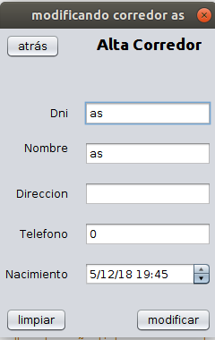
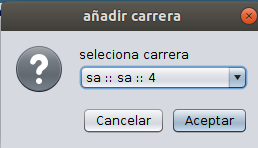

cierra la pantalla.
tabla con información sobre los corredores tales como el dni, su nombre o su fecha de nacimiento
abre un formulario para modificar el corredor seleccionado
pregunta si quieres eliminar el corredor seleccionado, no puedes eliminar corredores inscritos a carreras sin terminar
pregunta si quieres añadir a una carrera sin finalizar al corredor seleccionado si no hay ninguna disponible se lanzará ese mensaje
"nombre de la carrera"::"direccion"::"corredores restantes antes de llegar al limite"
luego se preguntará por un dorsal no repetido.